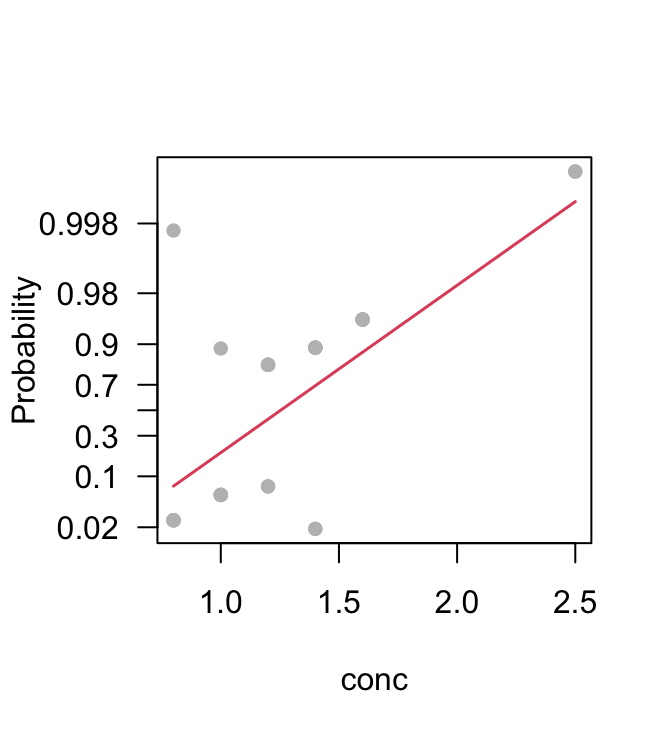

| 0.8 | 1 | 1.2 | 1.4 | 1.6 | 2.5 | |
|---|---|---|---|---|---|---|
| nomove=0 | 6 | 4 | 2 | 2 | 0 | 0 |
| nomove=1 | 1 | 1 | 4 | 4 | 4 | 2 |
4 Generalized Linear and Additive Models
Generalized Linear Models (GLMs) extend multiple regression style models. Generalized Additive Models (GAMs) are a further extension.
4.1 Extending the Linear Model
The basic model formulation is:
Observed value = Model Prediction + Statistical Error Often it is assumed that the statistical error values (values of \(\epsilon\) in the discussion below) are independently and identically distributed as Normal. Generalized Linear Models, and the other extensions we describe, allow a variety of non-normal distributions. In the discussion of this section, the focus is on the form of the model prediction, leaving until later sections the discussion of different possibilities for the ‘error’ distribution.
4.1.1 Multiple regression models
The various other models we describe are, in essence, generalizations of the multiple regression model, fitted in earlier chapters using lm(). \[
y = b_0 + b_1 x_1 + b_2 x_2 + . . . + b_p x_p + \epsilon
\] ### Generalized Linear Model (e.g. logit model) To simplify the discussion, a single explanatory variable will be assumed. \[
y = g(b_0 + b_1 x_1) + \epsilon,\\
\mbox{so that } \mbox{E}[y] = g(b_0 + b_1 x_1)
\] Here g() is selected from one of a small number of options. For logit models, with \(\mu\) the expected number of ‘successes’. Then: \[
\mu = n \dfrac{\eta}{1+e^\eta},
\mbox{ where } \eta = b_0 + b_1 x_1
\] Here \(\dfrac{\mu}{n}\) is an expected proportion.
We can turn this model around, and write \[ \eta = \log(\dfrac{\mu}{n+\mu}) = f(\frac{\pi}{1-\pi}), \mbox{ where } \pi=\frac{\mu}{n} \]
Here f() is the logit link.
Generalized Additive Model
Generalized Additive Models are a generalization of Generalized Linear Models. For example, g(.) may be the function that undoes the logit transformation, as in a logistic regression model.
Some terms may be smoothing functions, while others may be the usual linear model terms.
4.2 Logistic Regression
We will use a logistic regression model as a starting point for discussing Generalized Linear Models. With proportions that range from less than 0.1 to 0.99, it is not reasonable to expect that the expected proportion will be a linear function of x. Some such transformation (link function) as the logit is required. Logit models transform to a log(odds) scale. If p is a probability (e.g. that horse A will win the race), then the corresponding odds are p/(1-p), and \[
log(\mbox{odds}) = log(\frac{p}{1-p}) = log(p) - log(1-p)
\] The linear model predicts, not p, but \(log(\frac{p}{1-p})\).
The logit or log(odds) function turns expected proportions into values that may range from \(-\infty\) to \(\infty\). The values from the linear model may in principle vary across the whole real line. One needs a transformation, such as the logit, such that transformed values may extend outside the range from 0 to 1.
Among other link functions that are used with proportions, one of the commonest is the complementary log-log link. See ?make.link for details of those that are available for use with GLM models, as fitted using glm().
4.2.1 Anesthetic Depth Example
Thirty patients were given an anesthetic agent that was maintained at a pre-determined [alveolar] concentration for 15 minutes before making an incision . It was then noted whether the patient moved, i.e. jerked or twisted. The interest is in estimating how the probability of jerking or twisting varies with increasing concentration of the anesthetic agent.
The response is best taken as nomove, for reasons that will emerge later. There are a small number of concentrations; so we begin by tabulating proportion that have the nomove outcome against concentration.
We fit two models, the logit model and the complementary log-log model. We can fit the models either directly to the 0/1 data, or to the proportions in Table 1. To understand the output, you need to know about “deviances”. A deviance has a role very similar to a sum of squares in regression. Thus we have:
| Regression | Logistic regression |
|---|---|
| degrees of freedom | degrees of freedom |
| sum of squares | deviance |
| mean sum of squares (divide by d.f.) | mean deviance (divide by d.f.) |
| Minimize residual sum of squares | Minimize deviance |
If individuals respond independently, with the same probability, then we have Bernoulli trials. Justification for assuming the same probability will arise from the way in which individuals are sampled. While individuals will certainly be different in their response the notion is that, each time a new individual is taken, they are drawn at random from some larger population.
Here is the R code:
anesthetic <- DAAG::anesthetic
anaes.logit <- glm(nomove ~ conc, family = binomial(link = logit),
data = anesthetic)
summary(anaes.logit)
Call:
glm(formula = nomove ~ conc, family = binomial(link = logit),
data = anesthetic)
Coefficients:
Estimate Std. Error z value Pr(>|z|)
(Intercept) -6.469 2.418 -2.675 0.00748
conc 5.567 2.044 2.724 0.00645
(Dispersion parameter for binomial family taken to be 1)
Null deviance: 41.455 on 29 degrees of freedom
Residual deviance: 27.754 on 28 degrees of freedom
AIC: 31.754
Number of Fisher Scoring iterations: 5Figure 4.1 is a graphical summary of the results. The labeling on the \(y\)-axis is on the scale of the linear predictor (\(\eta\)),
termplot(anaes.logit, partial=T, pch=16, ylab="Probability", yaxt='n')
probVal <- c(c(0.02, seq(from=.1, to=.9, by=.2), 0.98, 0.998))
axis(2, at=log(probVal/(1-probVal)), labels=paste(probVal), las=1)
moves that is based on the fitted logit model.
Code is:
termplot(anaes.logit, partial=T, pch=16, ylab="Probability", yaxt='n')
probVal <- c(c(0.02, seq(from=.1, to=.9, by=.2), 0.98, 0.998))
axis(2, at=log(probVal/(1-probVal)), labels=paste(probVal), las=1)With such a small sample size it is impossible to do much that is useful to check the adequacy of the model. Try also plot(anaes.logit).
4.3 GLM models (Generalized Linear Regression Modelling)
In the above we had
anaes.logit <- glm(nomove ~ conc, family = binomial(link = logit),
data=anesthetic)The family parameter specifies the distribution for the dependent variable. An optional argument allows specification of the link function. Below we give further examples.
4.3.1 Data in the form of counts
Data that are in the form of counts can often be analysed quite effectively assuming the poisson family. The link that is commonly used is log. The log link transforms from positive numbers to numbers in the range \(-\infty\) to \(\infty\).
4.3.2 The gaussian family
If no family is specified, then the family is taken to be gaussian.
The default link is then the identity, effectively giving an lm model. This way of formulating a linear model has the advantage that one is not restricted to what is effectively the identity link.
# Dataset airquality, from datasets package
air.glm<-glm(Ozone^(1/3) ~ Solar.R + Wind + Temp, data = airquality)
# Assumes gaussian family, i.e. normal errors model
summary(air.glm) 4.4 Models that include spline terms
In most circumstances, rather than adding regression spline terms to lm style linear models, it is better to move directly to using the penalized spline approach, with automatic choice of smoothing parameter, that is implemented in the mgcv package. Note however the risk of over-fitting is there is a correlation structure in the data, such as is likely to be present for time sereis.
4.4.1 Dewpoint Data
The data set dewpoint has columns mintemp, maxtemp and dewpoint. The dewpoint values are averages, for each combination of mintemp and maxtemp, of monthly data from a number of different times and locations. We fit the model:
dewpoint = mean of dewpoint + smooth(mintemp) + smooth(maxtemp)
Taking out the mean is a computational convenience. Also it provides a more helpful form of output. Here are details of the calculations for a generalized additive model:
dewpoint <- DAAG::dewpoint
library(mgcv)
Loading required package: nlme
This is mgcv 1.9-0. For overview type 'help("mgcv-package")'.
dewpoint.gam <- gam(dewpt ~ s(mintemp) + s(maxtemp),
data = dewpoint)
summary(dewpoint.gam, digits=3)
Family: gaussian
Link function: identity
Formula:
dewpt ~ s(mintemp) + s(maxtemp)
Parametric coefficients:
Estimate Std. Error t value Pr(>|t|)
(Intercept) 13.12500 0.04215 311.4 <2e-16
Approximate significance of smooth terms:
edf Ref.df F p-value
s(mintemp) 3.220 4.042 3992.2 <2e-16
s(maxtemp) 6.252 7.420 794.3 <2e-16
R-sq.(adj) = 0.996 Deviance explained = 99.7%
GCV = 0.14971 Scale est. = 0.12794 n = 724.4.2 Model Summaries
Type in
methods(summary)to get a list of the summary methods that are available. You may want to mix and match, e.g. summary.lm() on an aov object. The output may not be what you might expect. So be careful!
4.5 Further types of model
4.5.1 Survival Analysis
For example times at which subjects were either lost to the study or died (‘failed’) may be recorded for individuals in each of several treatment groups. Engineering or business failures can be modelled using this same methodology. The R survival package has state of the art abilities for survival analysis.
4.5.2 Nonlinear Models
The function nls() (non-linear least squares) can be used to obtain a least squares fit to a non-linear function.
4.6 Further Elaborations
Generalised Linear Models were developed in the 1970s. They unified a wide range of what had earlier been treated as distinct methods, and have now become a stock-in-trade of statistical analysts. Their practical implementation took advantage of new computational abilities that had been developed for handling linear model calculations.
Practical data analysis demands further elaborations. An important elaboration is to the incorporation of more than one term in the error structure. The R nlme and lme4 packages implement such extensions, for a wide class of nonlinear models as well for linear models. Each such new development builds on the theoretical and computational tools that have arisen from earlier developments. Powerful new analysis tools will continue to appear for a long time yet. This is fortunate. Most professional users of R will regularly encounter data where the methodology that the data ideally demands is not yet available.
4.7 Exercises
- Fit a Poisson regression model to the data in the data frame
DAAG::moths, Allow different intercepts for different habitats. Uselog(meters)as a covariate. Whylog(meters)?
4.8 References and reading
Faraway (2016) . Extending the Linear Model with R. Taylor & Francis.
Maindonald and Braun (2010) . Data Analysis and Graphics Using R –- An Example-Based Approach. Cambridge University Press.
Maindonald, Braun, and Andrews (2024, forthcoming) . A Practical Guide to Data Analysis Using R. An Example-Based Approach. Cambridge University Press.
Venables and Ripley (2002) . Modern Applied Statistics with S. Springer, NY.
Wood (2017) . Generalized Additive Models. An Introduction with R. Chapman and Hall/CRC.